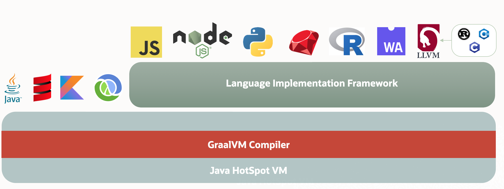
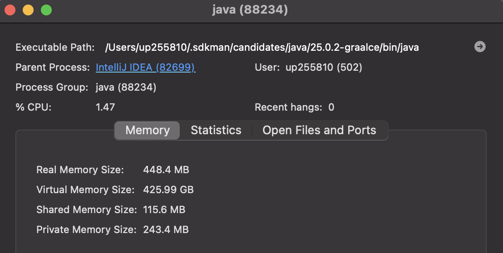
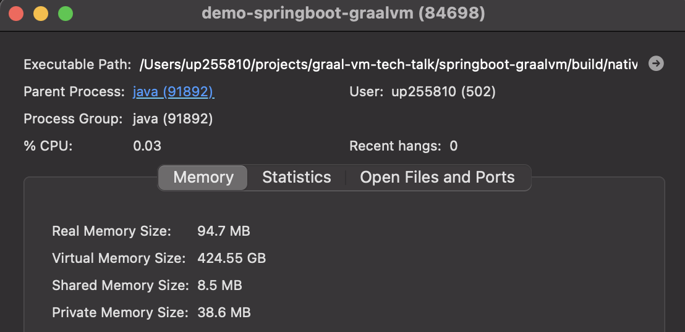
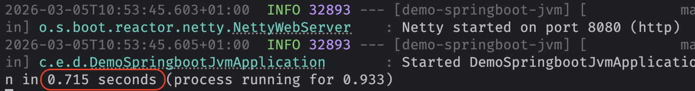
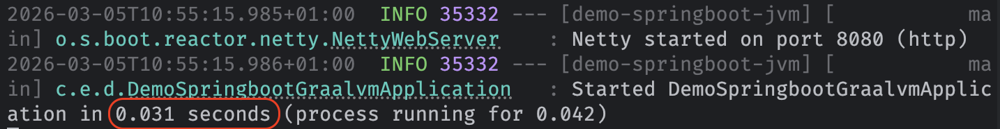
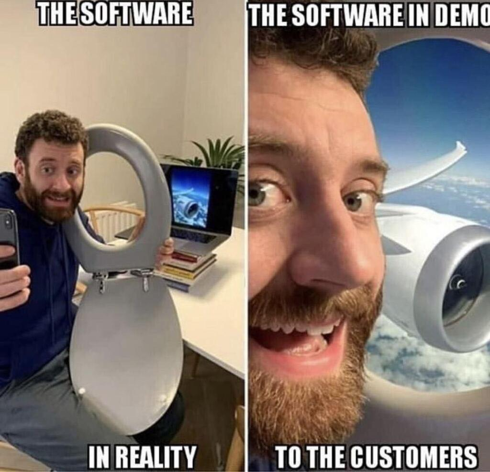
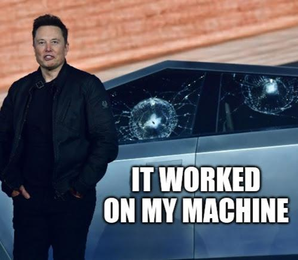

Tech talk
Native Java applications with GraalVM
What is GraalVM ?
- A modern JDK designed to run applications in a JVM or as native application (our focus in this presentation).
- It comes from the Graal project (originated at Oracle Labs).
-
Allows for a polyglot runtime: a JVM-based platform that can host more than just Java

How does native compilation works ?
- AOT compilation: ahead-of-time compilation, where the application is compiled into native code before runtime.
- Static Analysis: It uses a "closed-world assumption," analyzing the application to find all reachable code paths from the main entry point.
- Heap Snapshotting: It executes static initializers at build time, capturing the resulting state into an "image heap" so the application starts with a pre-populated memory state.
- Substrate VM: Since the application no longer runs on a full JVM, GraalVM bundles a minimal runtime into the binary to handle memory management (GC) and thread scheduling.
Native images key benefits
-
Improved security :
- Excludes unreachable code (closed-world assumption)
- GraalVM can embed a software bill of materials (SBOM) in your binary
- Fast startup and low resource usage.
- Extends Java applications with other languages.
Comparison of runtime modes
| Feature | JVM (JIT) Mode | Native Image (AOT) Mode |
|---|---|---|
| Startup Time | Slow (JVM warmup required) | Almost instant (in milliseconds) |
| Memory Footprint | Large (requires full JVM) | Small (minimal runtime) |
| Performance | Highest (dynamic optimizations) | High |
| Ideal for | Long-running services | Short-lived applications, CLI |
Comparison of runtime modes




More technical details
- Nice presentations on GraalVM :
-
GraalVM presentation starts at 27:12Very long and detailed
Demo time !

